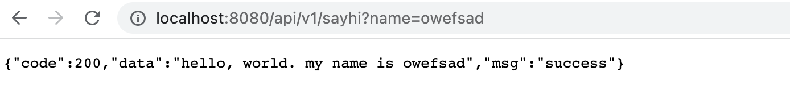

最近在学习 Go Web 开发，记录一下 Go 小白 如何从0开始，搭建出 Gin Web 服务，快速了解Gin Web开发的关键步骤。
题外话：博主做过多年的 Java Web、Python Web 开发，习惯在用不同框架开发前，先了解框架的目录结构、开发规范，按照标准规范进行开发，这样可以避免踩很多不必要的坑。Gin 算是 Go Web 中发展比较成熟的框架了，插件的支持也都很完善，但官网上并没有目录结构、开发规范的相关介绍，所以，本文的代码结构是参考 Github 众多开源项目的目录结构及开发规范后创建的。
先决条件
搭建本地的 Go 开发环境，具体搭建过程可以参考大量文章，自行百度即可。
创建 Gin Web 服务的目录结构
1、创建目录 ast-framework-service1
mkdir ast-framework-service
2、初始化为 Go 项目1
2 cd ast-framework-service
go mod init io.ast.service
3、安装 gin 模块1
go get -u github.com/gin-gonic/gin
4、创建基本的目录结构及文件
1 | mkdir router model service config |
配置文件 config/config.ini 内容如下：
1 | [server] |
数据库连接文件 model/mysql_driver.go 内容如下：1
2
3
4
5
6
7
8
9
10
11
12
13
14
15
16
17
18
19
20
21
22
23
24
25
26package model
import (
"fmt"
"gopkg.in/ini.v1"
"gorm.io/driver/mysql"
"gorm.io/gorm"
)
var DB *gorm.DB
func InitDB(conf *ini.File) *gorm.DB {
mysqlName := conf.Section("mysql").Key("db_name").String()
mysqlUser := conf.Section("mysql").Key("db_user").String()
mysqlPwd := conf.Section("mysql").Key("db_pwd").Value()
mysqlHost := conf.Section("mysql").Key("db_host").String()
mysqlPort := conf.Section("mysql").Key("db_port").String()
mysqlCharset := conf.Section("mysql").Key("db_charset").String()
mysqlPwd = mysqlPwd + "#"
fmt.Println(mysqlPwd)
dsn := mysqlUser + ":" + mysqlPwd + "@tcp(" + mysqlHost + ":" + mysqlPort + ")/" + mysqlName + "?charset=" + mysqlCharset
fmt.Println(dsn)
DB, _ = gorm.Open(mysql.Open(dsn), &gorm.Config{})
return DB
}
API 路由入口文件 router/router_init.go 如下：1
2
3
4
5
6
7
8
9
10
11
12
13
14
15
16
17
18
19
20package router
import (
"github.com/gin-gonic/gin"
)
var (
anonymousRouterRole = make([]func(*gin.RouterGroup), 0)
)
func Init(r *gin.Engine) {
registerRoute(r)
}
func registerRoute(r *gin.Engine) {
v1 := r.Group("/api/v1")
for _, f := range anonymousRouterRole {
f(v1)
}
}
Gin-Web 应用入口文件 app.go 如下1
2
3
4
5
6
7
8
9
10
11
12
13
14
15
16
17
18
19
20
21
22
23
24
25
26
27
28
29
30
31
32package main
import (
"log"
"github.com/gin-gonic/gin"
"golang.org/x/sync/errgroup"
"gopkg.in/ini.v1"
"io.gin.sample/model"
router "io.gin.sample/router"
)
var (
g errgroup.Group
)
func main() {
conf, err := ini.Load("config/app.ini")
if err != nil {
return
}
model.InitDB(conf)
r := gin.Default()
router.Init(r)
// 监听并在 0.0.0.0:8080 上启动服务
g.Go(func() error {
return r.Run(conf.Section("server").Key("addr").String())
})
if err := g.Wait(); err != nil {
log.Fatal(err)
}
}
创建 sayHi API 实现打招呼的功能
创建 service 文件 service/say_hi.go，内容如下：1
2
3
4
5
6
7
8
9
10
11
12
13
14
15
16
17package service
import (
"fmt"
"net/http"
"github.com/gin-gonic/gin"
)
func Sayhi(c *gin.Context) {
name := c.Query("name")
c.JSON(http.StatusOK, gin.H{
"code": 200,
"msg": "success",
"data": fmt.Sprintf("hello, world. my name is %s", name),
})
}
创建 route 文件 router/say_hi.go，注册路由并绑定处理方法，内容如下：1
2
3
4
5
6
7
8
9
10
11
12
13
14package router
import (
"github.com/gin-gonic/gin"
"io.gin.sample/service"
)
func init() {
anonymousRouterRole = append(anonymousRouterRole, registerAgentRoute)
}
func registerAgentRoute(rg *gin.RouterGroup) {
rg.GET("/sayhi", service.Sayhi)
}
运行 Gin-Web 服务
1 | go run app.go |
访问 sayhi 打招呼：
